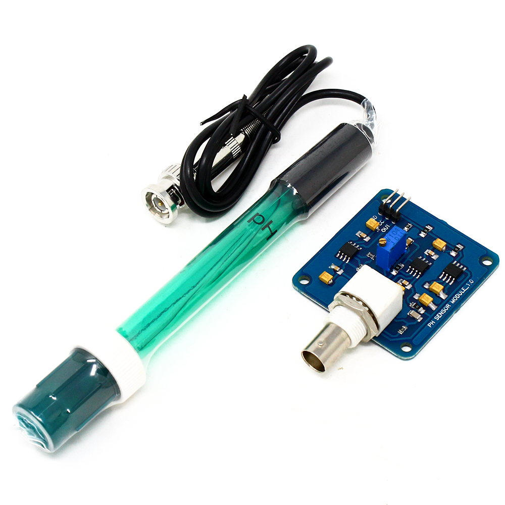
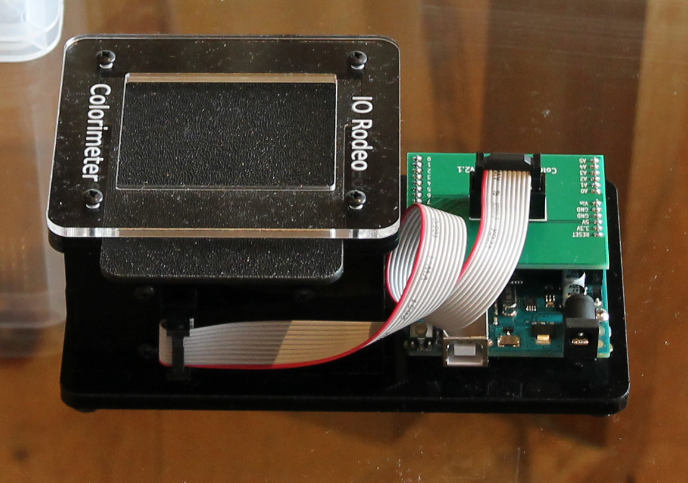
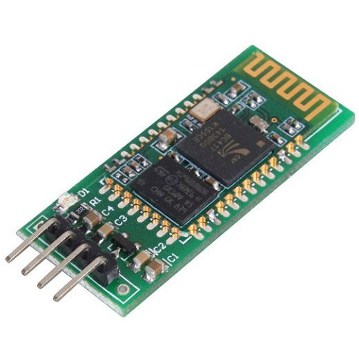

I have had my passion on IT ever since high school. But it was not until I started working on a project to participate in ISEF (International Science and Engineering Fair) that my love for IT began to flourished. I found it very exciting and happy to work on a project including assemble the electronic circuit boards, or create and design a mobile app. Along with the increasing development of technology, studying IT can really benefited me by creating more opportunities for me to connect with the new world simultaneously .
Overview
My project idea is called “Health Problems Predicted Through Urine Samples”, which is a household testing tool that is not only convenient but also affordable for everybody. The tool, which can show what problems a person might have in the internal parts of their body through Urine Samples, will be linked to an app that is accessible through download. This tool will provide us with useful advice or ideal diet that can be followed easily and help to improve our condition. Moreover, the app also contain the history of measurement to offer users the best advice for their health.
I have created the basis of this project since the ISEF. So now I want to improve the capability of this tool and design the mobile app with my current teammates.
Motivation
Health issues have always been one of the most important issues in modern society, especially in Industry 4.0. The health diagnostics from home, bringing convenience and economic efficiency has become a source of ideas that have never been exhausted.
Urinary tract diseases such as diabetes and kidney stones are becoming more and more common due to bad habits in each individual's life. Moreover, although these diseases can be easily treated early and timely, most sufferers are still unable to identify their own pathology effectively and conveniently, leading to detection, the disease has become more and more dangerous and can have a great impact on health.
On that basis, the device measures data from components in the urine so that it can be easily given results for the purpose of detecting the pathology of the user with high accuracy; give advice to correct bad habits in eating, daily activities to get a good and healthy living habits, and provide understanding of how to prevent and cure diseases related to eating problems
Description
The device is created in a small and compact rectangular shape with circuit sets fixed inside to limit interference and ensure hygiene.The device measures and calculates the data, then exports the data on the phone screen connected to the software developed on the MIT App Inventor 2 platform.
First of all, we want our measures data focus on pH, protein, glucose, the color in Urine Samples, then giving diet, exercises advice and health statement to user.
Diet advice can be given base on Food pH list
Some theory that project idea base on
The purpose of the urinary system is to eliminate waste and other detrimental substances from the body, regulate blood volume and blood pressure, control levels of electrolytes and metabolites, and regulate blood pH by urine. Therefore, urine contains a variety of chemical substances, which can be affected by your diet, exercises or maybe the state of your urinary system.
There are more than 100 variables which can be found by examining the urine. A clinical urine test usually consist of these variables:
The pH meter: pH is used to decide whether the urine is acidic or alkaline. If pH equals 4, the urine is strongly acidic. If it equals 7, it is neutral (neither acidic nor alkaline), and if pH equals 9, the urine is strongly alkaline. Sometimes, a pH of an urine sample can be affected by doctors' medical treatments, for instance, in order to avoid forming kidney stones, doctors can guide one to maintain their urine at an acidic or alkaline level.
Protein measure: Normally, urine does not contain protein. However, fevers, intense workouts, pregnancies and some special diseases, especially those related to kidneys can cause the appearance of protein in urine samples
Glucose measure: Glucose is a type of blood sugar. Normally, urine contains none or a minimal amount of glucose. When the blood sugar rate increases, in such cases as diabetes mellitus, urine will contain sugar. Glucose can also be found when the kidneys are damaged or malfunction.
The color of Urine: Normal color ranges from pale yellow to deep amber. Pigments and other compounds in foods, medications can change urine color.
About the app
We would like to form a program interface that is as simple as possible to make it convinient for users. The interface will include these buttons: measure, history of measurement, nutrition, user information…
In MESURE: there will be basic measured data sush as pH, color of urine, protein and furthermore, the amount of glucose in the urine.
In HISTORY OF MEASUREMENT: this will show you all of the result in one month
In NUTRITION: this will have 2 function: daily and period. In daily, advice and diet will be given base on your result in that day. But in period, the advice and diet will be given through results consume in one month to give you the long-term vision about your health.
The app is not invented to replace doctors. It is created to keep you up to date with your health condition. If there are some urgent situations emerge, there will be a notice to tell the users that they should go to the hospital immediately.
Tools and Technologies
Belows are the tools and technologies I can think of right now to help me working on this project idea.
- pH meter: use to measure pH
- Water Colorimeter: measures the color of urine to give detail answer
- Arduino Uno Compatible: uses with Arduino IDE code.

- Bluetooth HC-05: helps the device to connect with the app
- Mit App Inventor 2: this is one of the most important tool in this project, which help us to create the app for users in the easy way with friendly display.

Skill Required
- Basic knowledge about this field: since I am really interested in health studies, I think I can help my group to understand the basic information of this aspect.
- Coding and working with Arduino fluently.
- MIT app inventor writing and designing skill to make the app interface more appeal to the users, but also easy to operate at the same time.
- Searching and experimentalizing skill: this one is crucial since you will have to find the source, the pathology and the perfect diet to enhance the project.
- Teamwork and information sharing - important skill lead to project success
Outcome
- If this project success , there will be an equipment with highly feasible and relatively reasonable price, which is capable of storing data to ensure efficiency.
- Diversified and practical way to develop.
- The incidence of diseases in society is increasing constantly, especially those related to the urinary tract, so urine analyzers and home health monitors are an appropriate product
- Help users to take care of their home health effectively with guidance from the app.
- Meet the needs of home diagnosis - effective and convenient.
- Monitoring health condition continuously and regularly, raising awareness of every individual about their state.